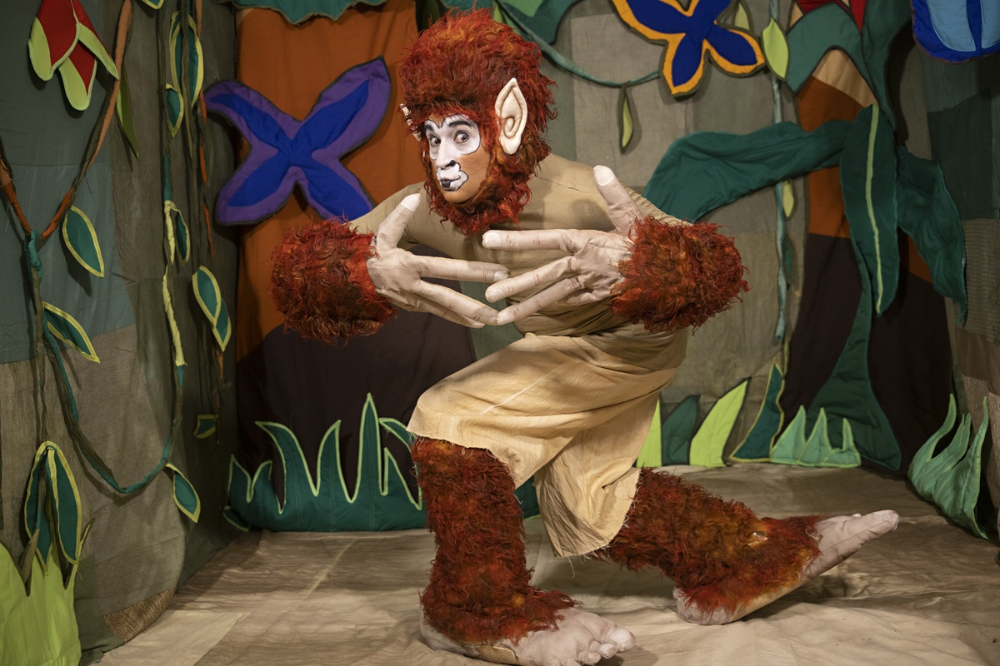

Curupira

Curupira é um ser mítico do folclore brasileiro conhecido por ser o guardião da floresta e por punir aqueles que entram nela para derrubar árvores ou caçar os animais. O curupira é personagem de uma lenda que se originou na cultura indígena brasileira e acabou espalhando-se por todo o país. Foi uma das primeiras lendas indígenas registradas pelos portugueses.